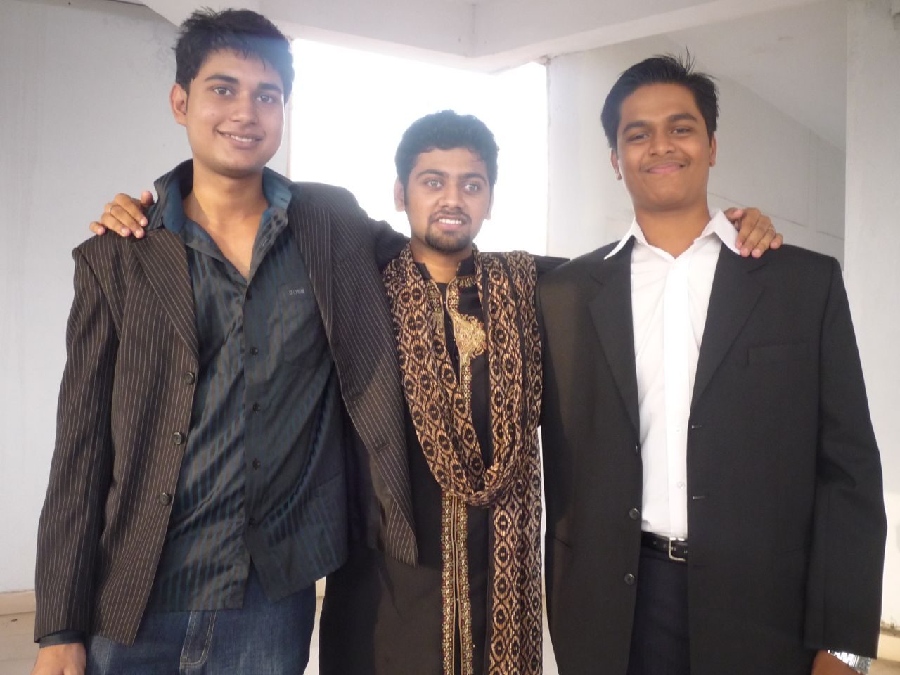

The Yearbook - Commemorating 2005-09!
Maruti Borker's profile information
Name - Maruti BorkerBirthday - 5th June 1988
Email - maruti@students.iiit.ac.in
Address - H.no 6-1-68/4 saifabad hyderabad - 500004
Phone - 9949390458
Webpage - Link
Hobbies - programming,mathematics,puzzles,computer games
WishList - Loose 5 more Kgs before I go to banglore , A hayabusa before I turn 30 and the usuals :D
Memorabilia - Apr 16th 2008 , Felicity 08
What would you want to be remembered as - Tifozi - fattebaaz,lazy n a geek
Future Plans - MS after 2/3 years or an IT Startup
Testimonials written by Maruti Borker
Maruti Borker's Album
{kind=link}
{kind=link}

{kind=link}
The roomiez :P
Testimonials
harshita wrote-maruti broker
 ...thats how i call him...is a very decent guy...he is very calm...jyada bolta nahi hai... i love his hyderabadi accent... its awesome...heard many stories abt his corner pc in first year ....linux bond...i tried reading his tech blog once and everything went above my head...he is very intelligent...i like the way he takes care of his friends...i hope u reach gr8 heights in life...all the best for ur future
...thats how i call him...is a very decent guy...he is very calm...jyada bolta nahi hai... i love his hyderabadi accent... its awesome...heard many stories abt his corner pc in first year ....linux bond...i tried reading his tech blog once and everything went above my head...he is very intelligent...i like the way he takes care of his friends...i hope u reach gr8 heights in life...all the best for ur future 
Raman Jain wrote-
Maruti bhai ....
Seriously ultimate banda hai ye .. meri dictionary me main ishe "bindass
 " bolunga .. bahut karname karta hai ... but Dil ka bahut achcha banda hai... I can remember, jab hum log NBH cellar me rahete the... bahut masti karte the, har week me ye apne ghar se dosa leke aata tha humare liye...thanks yaar
" bolunga .. bahut karname karta hai ... but Dil ka bahut achcha banda hai... I can remember, jab hum log NBH cellar me rahete the... bahut masti karte the, har week me ye apne ghar se dosa leke aata tha humare liye...thanks yaar !!! seriously is bande ke saath kevel haste hi rahoge.
!!! seriously is bande ke saath kevel haste hi rahoge.
linux ka bahut bada bond hai ye aur coding to subhanallah, google me intership, yahoo me job .. overall banda heera hai
..but some how we've lost our tuning these days and never talk to each other but still I respect him alot for whatever he has achieved so far and wish him a great and successful life!!
best of luck dude!!
Himank Sharma wrote-
Maruti aka Billu aka Kelso aka Roomie
Maruti Borker Roomie, that's what his name is in my gtalk list. He would undoubtedly be my favourite person in the campus. He has always been like a younger bro to me, he is the only person in this campus, who I am concerned about. It wouldnt affect me agar kisi aur ka kat raha ho but I tend to get irritated when I see this happening to him. He is the person in campus who I am most concerned about.
Starting from the beginning, I remember him as the pondy com of the batch, he was the first person who got mplayer running, which meant we could see a lot of stuff. Infact his system used to be the screening point of stuff for the whole batch. His system used to be serve as common system, anybody would come, sit on his system d/l stuff and enjoy while he was in class. One such time I d/l one video named Tutor Ra***st, that particular video became one of the favorites, almost everybody saw that video on his system that day
. Recently (almost a month back), I found that video again and maruti was the first person I pinged after downloading the video  . Most of our interactions at that time used to be when we were working (BCing) in workspace. I remember him as a friend of Pk n Piyush, and almost all my interactions with him were due to them, coz he would always be with them whenever I saw him.
. Most of our interactions at that time used to be when we were working (BCing) in workspace. I remember him as a friend of Pk n Piyush, and almost all my interactions with him were due to them, coz he would always be with them whenever I saw him.Himank Sharma wrote-
[Part 2]
He is the person who has been the reason of tears in my eyes, most of us will remember that fateful night in room no 146. His hurt, his disappointment, the way he broke down, that has been one of the most moving moment in the 4 years of B.Tech for me. Buddy just love you, so glad to have you here with me
 Then came 2nd year, when he became my roomie, and it was a golden period of my life. Thats when I came to know this guy closely, the many facets to his personality. He is a stand up comedian, you could just sit back and look at him and I promise you that you will have time of your life. Its so much fun seeing him doing all those harkatein. That whole year, I laughed more than ever just because of this guy Thank you buddy for all the laughs. Another thing about him is that he is a completely hassle free roomie, he is the best roomie you will ever find. He will never complain about anything you do. Almost the whole year, it was as if I am living alone in the room . He didnt have any problem with sound, so I could play anything on speakers even when he was sleeping I could play any songs of my choice (except Old Hindi songs, which he hated). All the times I leofied him, he is and will always remain my favourite target to leofy, coz of the reactions he gives, and the awesome thing is, he never minded and would be normal, after a long session of leg pulling. We shared a common love for That 70s Show, I started watching the show and he followed the suit. The break between 3rd and 4th semester, the only thing that would happen in our room was 70s show, we would wake up, start 70s, have lunch, followed by 70s then dinner followed by a long session of 70s. It was such an awesome time, That 70s Show + Friendship, perfect recipe for AWESOMENESS Those times spent in C-16 were just awesome
Then came 2nd year, when he became my roomie, and it was a golden period of my life. Thats when I came to know this guy closely, the many facets to his personality. He is a stand up comedian, you could just sit back and look at him and I promise you that you will have time of your life. Its so much fun seeing him doing all those harkatein. That whole year, I laughed more than ever just because of this guy Thank you buddy for all the laughs. Another thing about him is that he is a completely hassle free roomie, he is the best roomie you will ever find. He will never complain about anything you do. Almost the whole year, it was as if I am living alone in the room . He didnt have any problem with sound, so I could play anything on speakers even when he was sleeping I could play any songs of my choice (except Old Hindi songs, which he hated). All the times I leofied him, he is and will always remain my favourite target to leofy, coz of the reactions he gives, and the awesome thing is, he never minded and would be normal, after a long session of leg pulling. We shared a common love for That 70s Show, I started watching the show and he followed the suit. The break between 3rd and 4th semester, the only thing that would happen in our room was 70s show, we would wake up, start 70s, have lunch, followed by 70s then dinner followed by a long session of 70s. It was such an awesome time, That 70s Show + Friendship, perfect recipe for AWESOMENESS Those times spent in C-16 were just awesome Himank Sharma wrote-
[Part 3]
Towards the end of second year, we started growing apart, he decided to concentrate on his studies and as a result of this, he would leave the room b4 i woke up and come back after I would have slept, which meant almost no interaction for days on end. But still then being roomies, we used to have our share of fun as and when he was in room. Coming to 3rd year, which was the real reason for us growing apart, I still remember that he got the room in our wing in the beginning, but as he was sick and couldnt come to hostel, the room was taken up by Manish. I was completely anti against this as I would have loved to have Maruti in my wing instead of Manish, with whom my interaction wasnt that much at the time. Finally he got the room on 3rd floor and that almost brought it to an end. Though I still remember that sometimes he would come to my room and then we would go to his room and do some BC there. At times (though very rare) I would also go to his room but me being the lazy guy that I am, didnt go upstairs that often. Slowly and slowly, we grew completely apart. This meant just saying a "hi be" when we meet and doing some BC but that was almost all the conversation we had in 6th and 7th semester. I would just listen stories about his achievements, his CG, his internship in Google and would feel glad that although he is not with us anymore, but its better for his career. He had now become a studious, kasi guy who would spend all his time working and reaped rich benefits for them.
Himank Sharma wrote-
[Part 4]
He is the funniest guy I have ever met, he is a stand up comedian, you just sit and observe this guy and his antics will make you ROFL
I just absolutely love it when he is speaking Hindi (which is always), there are a few specific words which we mispronounces, like he speaks galla instead of gala (as in throat), fatar instead of patthar, and things for him gumti (as in lost) nahin hain instead ghoom ke aa jati hain . The way he reacts to situations, just love it!! Am a fan of this guy!! Just too awesome..
After growing apart in 5th sem or so, we werent too much in touch until 8th sem, and I am thankful to swimming which I think was the initial thing which brought us closer, the 1 hour BC we used to do in swimming pool, me trying to drown him in the water and her crying for his life, it almost seemed like we were back to normal. Slowly, slowly things started getting better. He would always come to our wing before lunch or bfast and then we would go together. It was at this time, that we all realised that how much we missed him all this time, I always used to think that it didnt matter much to him, when to my surprise he comes and says "Mujhe lagta tha ki main hi tum logon ko miss karta tha, it feels great to know that you guys felt the same"
, it almost felt like we were back to 3rd sem Himank Sharma wrote-
[Part 5]
And ofcourse how can i forget all the times we spent doing You know what, the thing itself is awesome and add to it friends, it just becomes incomparable
Will always remember the story about the song I am the Walrus, and your rendering, teacher sali makdi thi, lennon ne assignment nahin kiya and blah blah. ROFL!! ROFLMAO!! 

One thing about him is, he hasnt changed even a bit in all these years, I used to think he would have matured in all this while but when I talk to him after more than a year, he is still the same kid who was my roomie. Thats why at times I keep wondering ki sala Bangalore mein koi iska kat na de, here we were all friends but there it would be all different. Another thing with him is, he is so good hearted, he doesnt want to hurt anybody ever that's why at times he would agree with people even when he doesnt feel the same and it seems a bit artificial to me at times. I dunno if I am the only one to observe this or some other people also have felt that. :| It pains my heart to know that he has to go to Bangalore or else there wouldnt have been any doubt as to who I wanted as my flat mate. He will always be my first choice. Will miss you a lot buddy
and will always rue the one and half year we wasted 
Wishing you all the best!!
Most Memorable Moment : I am the WALRUS
Song for you : Tujhpe qurban meri jaan
An advice : Grow up, don't be a kid anymore
Cheers!! Keep Rocking..
Srirang Ranjalkar wrote-
part 2
He helped me a lot during placements. I was very happy to know that he was the only one who got selected that day. And that too he got selected in Yahoo!!
Awesome man.
After our placements, we started to go to swimming. I seriously
to all the effort this guy has put to learn swimming. I still remember how he almost cried looking at the water in the pool and today, he's like a normal swimmer.
And then came Felicity 09. Cache in and Kode Konundrums. We made all awesome accounts and did a lot of racha during the online events.
.
Also, I'm gonna miss all thos swimming timings that we followed (on dot), those swimming
I know I do all
 stuff and I might have hurt you sometime. In that case, please forgive me.
stuff and I might have hurt you sometime. In that case, please forgive me.
Jahan bhi ja, apna awesome aura failaata ja.
Tera
Ranga
Srirang Ranjalkar wrote-
part 1
Maruti.. This guy is like the fundoo-est guy of our batch.
Baaki jo bhi logan like unko main tag kar raha hun. Hacker, Linux G33k, foodie, fodu,
Ab aate hain stringht to the point. I met this guy during our Felicity. He used to come to Sashidhar's room and we crakced a lot of puzzles in IIT's contests. And after that we did endless BC for hours and hours. Thats how I came to know about him.
And the next thing I know about him is that he got an intern @ Google. I visited Google for 3 times
. Food there was just awesome!! If you think you've gained your weight, I must say, it was not your problem. Free food is irresistable
And then, he asked me to book a room for him in our floor. And in 4th year, this guy became my wingmate. Till, then my lingo was kinda pure. But all of a sudden, I started speaking in a typically Hyd guy, using yaaron and baigan words every now and then.
. That,s how Maruti is, jahan bhi jayega apna effect chod kar jayega
Things became very different from the day he stepped into our wing. I never felt like I didn't know linux/wndows well. I always thought that whatever happens to my system, now I have Maruti in my wing so there would be no problem.
 . And indeed, he always helped me in case of all problems related to windows/linux stuff. He's the GOD doing these things .
. And indeed, he always helped me in case of all problems related to windows/linux stuff. He's the GOD doing these things .
Abhishek Sainani wrote-
The first thing that struck me about him was his name, "Maruti", I thought of the car.
He's quite a geek but loves to hang out with friends and sometimes do crazy stuff and have fun... his face has a certain kind of shine and his smile makes his face shine even more!
All the best for future, I'm sure it'd be much better, although not the same as these college days!
P Sharat Chandra wrote-
chicha, hyderabadi, ma homie, gangsta, geek, phodu!, my second fav artist (first is ragdoll, yaar but your sketches fall in a completely different and awesome league), can eat quintals of biryani, roams all over the wing wearing his mini-towel (which kinda looks like a mini-skirt), he tries to seduce people with it, 'gandhi' turns him on (weird, really weird), will remember doing some good stuff together in mathematika '08, sometimes, he groans as if a bamboo has just been pulled out of his ass, he is a Genthoo(telugu), Big Booty Bitch, it's an impossible task to picture him doing 'yoga', love the "walking style" which you imitate, enjoyed that 'gangsta rap' shit and do bring some dosas from home again before you do that "degree-lekhe-niklo" thing, that food was pretty dope man. bangalore mein aachi si, ek beautiful si, poti ko patale. mera aashirvaad tere saath hai. i've had some of the best times along with you man. take care. sorry, jaldi mein hun (T.Lines ka report is getting on my nerves) couldn't make a proper paragraph out of the above things but you know how much of deep respect i've for you and you know me. so, don't feel off
My message to you: PLEASE DON'T WEAR A LOW-WAIST JEANS, EVER. PEOPLE WILL GET NIGHTMARES.
good night and good fucking, mate. always bitchin' n trippin'. *gangsta style bye*
Ankush Kalkote wrote-
Maruti aka Tifosi is a pleasant, very friendly and geek personality... You will never get bored around him... He has really sharp and mischievous mind... Perfect hacker
... He has great command over web technologies, Linux and Computer Vision... Also a great coder
He used to live in Cellar first year... aur workspace me bhi bahot popular tha...lekin pehle bahot kam baatein hoti thi... Our real friendship took shape in Google
...
We share lot of memories during the Google internship.... Enjoying the food and chips there... Making sandwitches... Eating chat... Going to CCD.... Playing Foosball, TT and Snooker.... Playing games on XBox or Wii specially.... Playing Guitar hero
During Foosball matches we used to support each other against Somani
... and if we win then teasing Somani would be an awesome enjoyment .... At all the time teasing Somani was part of the fun package...
He is very dedicated to his work... He doesn't work very hard but works smartly
... He used to find many niche things in the Google and then used to share passionately with us ...
He is Youtube aficianado... Surfs internet a lot....and he shares the best things with us.... Thanks dude for that
Wish you all the best for your career and life
... Keep in touch after going to Bangalore....
Best memories : internship at google
, playing Foosball and Runway9 outing
Will miss u 4 : Your witty nature, friendly attitude
Vipul Mittal wrote-
Part 1
I always knew him as a kiddish, innocent and a friendly guy. We share a special bond and I always leofy him but he never minds it. The greatest quality about him would be his patience level. People keep on leofying him and he never retaliates. He always take it in good spirit and just laughs and keeps on laughing.
I met him for the first time in workspace when he was watching "something" on his pc
My first impression was of a geek. He used to stay in GHEB and that's why the interaction level was very less. We used to meet only during outings. When he shifted to NBH, I came to know a lot about him. He is definitely a geek but there is lot more to his character which makes him so special and different from others. He is very pure at heart and hardly keeps any hard feelings for others. He always do some idiotic and stupid things which will force you to lugh your heart out. I remember we became very good friends during his stay in NBH.
I remember one incident when I visited his room in GHEB once and just as he opned the door, I could not even stand there for a second. It was stinking like hell and I was really amazed that how can this guy stay in such a room
. When he shifetd to NBH, my biggest concern was that now cellar will also start stinking. But this never happened . I remember that Himank used to exploit him so much at that time and I always felt pity for him. Poor chap . If someone else would have been in his place, he would have kicked Himank's ass but Maruti never complained about him. A real linux geek. He has helped me uncountable times with linux problems.
Contd..
Vipul Mittal wrote-
Part 2
Then things started changing during the third year when he got busy with CVIT work. This drifted him apart from the group and I feel that was the biggest loss for the group so far
. Then when we shifetd to OBH, he was left alone on the 3rd floor and this made the things more worse. I'm so grateful that I've always been on talking terms with him. Recently he again started staying with us and its so good to see that . It's so much fun when he is around. He always cracks some silly jokes or gives some gestures which make everyone laugh. I feel its really great that he has again become a part of the group.
Academically he has worked very hard from 3rd year onwards. This can be justified by his internship in Google. It was sad that he couldn't make it for the PPO but he finally made it to Yahoo during placements. Hats off 2 u mate
.
I'll cherish so many of the moments spent with you. Your silly questions, your blank face, your laugh, your childish behaviour, your innocence, your dedication. I'll remember so many things about you
. I felt that you are very easily influenced by people. So just ensure that you are not very much influenced by others otherwise you are very good and try to be the same for ever .
Most memorable moment would be last booze session in my room, that long chat walking in the campus and those infinite bc sessions we had in your room in NBH and my OBH wing.
God bless you. Good luck for your future bro
Subhashis Chand wrote-
In my first year I wrote a testimonial for him on orkut. The lines started like "Innocence personified" and even after four years
I would stick to it. In the first month whenever anyone asked him to give an introduction he had a common answer... "main Maruti hoon, goa ka hoon par 16 saal se hyderabad mein hoon
". He is a person who is always pepped up. Has the best
smile. When he starts laughing its difficult to stop yourself as well, He cracks some of the best PJs. I can term him as a best roomy(after Manish
) anyone can have, his and bhalu's tale as roommates were very popular. I have some really sweet memories with this chap, be it the funda session walk after he got an F in EC(which was later changed to D), the Dosas he used to get for all of us, dancing together on the song "Ari Ari" not once but twice, the imli waala incident and all the BC we had in our first and the second year. Things went for a spin in the third year, we hardly met but whenever we saw each other we greeted each other with a vibrant
smile. Then came the last semester, I thought that he would have probably changed but I was happy to see he is still the same innocent guy with a smile on his face. We are back to our good old days, I must admit he has the best "sutta" marene ka style. I can never forget the recent boozing incident when he was crawling to reach us to grab a cigg it was freaking hilarious, our all recent chai stall visits and BC in OBH wings. I just regret one thing, We missed on you for almost two years. You are a great friend ,
Maruti and I am glad that things are back to normal. ab dono Banglore mein hai... it feels great to have a friend placed in the same city
ultimate waali BC pelenge...Still the booze treat is pending
.
Cheers!!
Akash Agrawal wrote-
Maruti jise first year main P*** com bulate the uske PC ki location ki wajah se. We were in the same mentor group, or tab ye itna low voice main bolta tha ki sunayi bhi na de. In the starting we used to live in the same wing in GHEB. Jab bhi ghar jata tha to Dosa ya aisa hi kuch or leke ata tha jis par ham sab toot padte the.
Jab bhi iska naam ata hai to mujhe 2 incidents yaad ate hai. First is when he put some "Exclusive" pic in the wallpaper of guest login of his machine, and when we entered the workspace two girls of our batch were sitting on his machine, jise dekhte hi ham wapas room bhag gaye the
The second event is when I restarted his machine using remote login or khas bat ye thi ki at that time he was in a very advance level of some, again "Exclusive" game
Exclusive bole to ***
Best of luck for your career
Keep smiling
Manish Arora wrote-
Maruti Borker aka P-Com aka gilly aka Billu aka 1049 aka .....
I call him 1049 and he calls me 1048 as our roll nos are 1048 and 1049. Shuru mein to isne kabhi mujhe naam se bulaya hi nahi, hamesha 1048 hi bolta rehta tha. This guy is a geek when it comes to techie stuff. A genuine bond with a very sharp mind and hard-working attitude on the things of his interest. Mujhe jab bhi apne pc par kuch problem aati thi, main apne labcom ki jagah isse ya Adi se hi poocta tha. Isi ne mere pc par mplayer install kiya tha
. Ise C-programming karte dekh kar pata chal jata tha that how sharp he is and how quickly he grasps the things. We spent some quality time in workspace where his pc was quite popular and we used to have a lot of his visitors in our area . Classes mein ise kabhi jaagte hue nahi dekha, hamesha sota hi rehta tha. Hamesha hasta rehta hai. Choti-2 baat par bhi zor-2 se typical Maruti style mein hasta tha. Always ready to help, thanks a lot for all the help you provided to me in workspace buddy . You are a genuine bond associated with the quality of being down-to-earth with a nice smile which always remain present on your face. Have the same attitude in your life. Keep up the good spirit. Sincerely hope that you make it very big some day. May God give you all the success and happiness in your life. Cheers to our friendship. Keep in touch and keep calling. Bengaloru jakar bhool mat jaiyo.
Cheers
Manish
Atul Dwivedi wrote-
Maruti ...bahut change aaye hai iski life mein ... pahle ..mujhe yaad hai ..we used to fight a lot during ..1st year summer and work space ki fight to yaad hi hogi ..ek doosre ka stuff delete kar diya tha ..
But banda ..ek ek .hard working and padhai mein dhyaan dene laga ..which is gr8
Now he has got placed in YAhoo.. coding mein bond to hai hi .... !!
Aur banda thoda geek type ka hai .... !!
As a person but banda same hi hai .. nothing has changed himm...
well dude ..best of luck for future
Prateek G V wrote-
One of my super cool friends. His Hyderabadi lingo makes me go LOL + ROFL + MAO most of the times. You are so funny Maruti
He was the first one to introduce me to social networking (I felt honored when you made me the owner of IIIT Hyderabad community
). He is the first one to start blogging in our batch and that one spark was good enough to get many of us close and to be popularly known as 'Bloggers' Batch' . He shares some awesome links in Google Reader (tech+humrous+flashy images +regular tests ). He really works hard when it comes to something that is close to his heart. Happens to be well known hacker to the outside world (some guy, when I said I am from IIIT, the first thing he asked me was do you know Maruti? I was like  ). Apart for that he is brilliant at coding, and has won good number of competitions. He has put a decent effort in reducing weight. Applause baby!
). Apart for that he is brilliant at coding, and has won good number of competitions. He has put a decent effort in reducing weight. Applause baby!
We share similar interest - Ferrari fans, Megan Fo
 y), Kamat Resturants Dont go to Bangalore. Gangstas will surely miss you
y), Kamat Resturants Dont go to Bangalore. Gangstas will surely miss you Sachin wrote-
Along with Himank, the guy next door in Cellar, the linux bond of first year. Got in touch with him mainly because of Kulbir and all those DC++ chats. He was first one to own 200Gb of harddisk, kept lots of movies with him, and always bugs him with requests
. DC++ chats where me, kulbir and tifozi keep attacking on someone was surely fun. At one time I installed all the DC to keep msging from different nicks The prank u played about stuff sharing really scared the hell out of many of us . But jab pta chla ki tune bheji thi woh mails, bahut laat marne ka mann kar rha tha. His sense of humour is superb, the funny comments here and there just make you laugh like anything. Another thing is his blog, like his room partner he was passionate about his blog. Keep posting things, and publicizing them . Reading your posting in Google Reader is one of my favorite timepass. keep posting them In acads,He has above 8 CG now . From last few sems, he has been consistently phoding in all the exams. I have seen him working, when all the lab is shouting and playing games. Hatsoff dude for your dedication He has also cracked two of the toughest interview Yahoo and Google intern I am sure you will do great in your life,and as you are in B'lore, hope we will have parties often
All the best for future
Prashasti Gupta wrote-
Maruti
well his display pic totally tells abt him
He is awesome
as Barney would say it...you constantly enjoy his company...there is never an awkward pause when he is arnd...I have always enjoyed his fattas ...smtimes I used to be the only one to laugh at it also...there was a time when I joined his fatta club..
and we would fight who is better at fattas..
He is a bit shy, but is awesome at technical stuff...He used to solve all my doubts in first concerning linux
...he didn't used to study back then..but has changed drastically
...now he has a respectable gpa
He was this sweet person who used to bring awesome dosas from kamat hotel...one of the best I ever had
...
He has quite a lot of achievements in his account...be it research paper or google intern or yahoo job...he is good at his job..
I fondly remember him dancing at 'ek pal ka jeena' at freshers and also mahabharat skit
..
I thought he changed smtime in second year..and became this serious sincere guy...but I was totally wrong...one of the recent walk-talk with him has proved..he hasnt changed an inch..
...he is still that sweet innocent Maruti...
Well...All the Best...
Waise tu to Bangalore aa raha hai ...maje aayenge weekends pe
Most memorable momentAll the BC sessions we had..
Good Luck
Vinay Reddy wrote-
well to start with although my acquaintance with him is limited to very small period, he is a very intelligent and good person. when it comes to internet and things I should accept that he is a geek
One couldn't count the no. of sites he browses in a day. He loves computer graphics very much which he had worked for last 1-2 years his a** off for honors. I wish pigeon would give it to you
As he pointed out we had a lot of interests in common I think he is the first guy I met who has such a great affinity for non-veg
, playing nfs,
solving puzzles.
Yes "mischief is his middle name" but the kind of mischief he does is no better than a first class child does
sprinkles water on others and hides,
blowing a whistle which oscillates between his mouth and nose are the kinds of mischief he does. Smiles all day all long I don't know what he wears
I kinda love his groan which he does when he doesn't has an argument to take on u ....its like someone deliberately has put a stick in his a**
We miss u a lot dude ... I wish Yahoo! is in Hyd
nway we will regularly update the fun u miss c ya bye! Bhargava Chowdary M wrote-
contd...
He's always calm and rarely get's angry. Eventhough he could've retorted back when i used to behave like a guy who could kick his ass and give all those gaalis he never said anything
But then like i said in ranga's testi, i've pissed off even maruti! But i'm glad he soon forgot about it and we've got back to having fun as usual in our wing
I'd miss you da! but dont worry i'll be visiting bengaluru atleast once a month and i was serious when i said we'll be partying all weekend with your money!
Hats off to you da!
all the very best for your future and hope you'll soon get a gf in bengaluru
Bhargava Chowdary M wrote-
contd...
Ok now that part where i list out all the great qualities he has!
He's a great friend, total fun to hang out with, unique dancer ( he'll make anyone rophal
with his dance steps. they are seriously that funny and good at the same time
), totally awesome and funny when it comes to talking in hyderabadi hindi, cares a lot for his friends and goes to any extent to help them out no matter what the situation is ( there are very few people i've met who'd do so much for their friends ), a total g33k! a great coder and hacker!
so now the other part!
He's really really lazy ( but not as lazy as me! ). I used to wonder how he'd spend all that time in the lab working. Probably deepti was always behind him! Nah! he's really hard working when it matters and the rest of the time he just needs a little push! One thing that always puzzles me is his addiction towards NSFW articles All those articles/links that he shares on google reader and twitter! sometimes i'm like OMG!WTF! some of them are really good tough and of late i've been checking only the shared articles on gReader and his are the most interesting ones
Aah how can forget about music! he's a huuuuuuuuuuuuuuge eminem fan! and loves hip-hop and rap. Is also into rock and metal at times. ever since i lent my speakers to him he's been killing us with all the weird music
that he listens to! Psychedelic rock!?! dude what the eff music is that!?!?!
ever since i've been trying to learn hindi, he's been patiently listening to all my pathetic attempts at giving "gaalis" in hyderabadi hindi!
Dude why didnt
u ever correct me when i used to say "kya chutiye hai re tum" all the time!
It's because of you that people are leofying me when i talk in hindi!
Bhargava Chowdary M wrote-
Thanks to felicity 08 a lot of good things happened in my life! and getting to know maruti and deepti is one of the them
He and deepti had so much entu
towards the promo video and wanted to do so much to make it a huge success, but i tho didnt give them too much work because they used to stay in the lab
most of the time and work so much for their honors project
. did not want them to waste time in learning all those softwares and i ended up giving them smaller tasks of splitting videos, choosing photographs and stuff like that! sorry for giving u those boring tasks da! I tho didnt care about my acads back then so i was working on the video like an hour before exams too!
They did any work that was given with so much dedication! that's what i like in them. donno if maruti was forced to do all that work by deepti
but i'm glad u both were there in the team! It was because of u guys that i used to tell myself "c'mon stop lazing around and finish up ur work. look at them and learn!" although that self talk didnt do much help but that awesome video wouldn't have been possible without you guys! and i'm not exaggerating here.
It was after working together for the video that we got close and became best buds
We were also the organizers of 3-4 online events in felicity. aah! sculpt!!! how can i forget that event. so many things happened related to that event! not all good though but we had a blast all along! He did so much promotion for that event! used all his g33ky skills , spammed forums and websites like hell! we got participants from canada and other countries (whose names i dont remember!)
I got to know more about him when i used to visit the cvit lab whenever i got bored sitting in cogsci lab! all those short bc sessions, all those gay jokes we were subjected to! ( i hate deepti
), the nfs races we used to play on that aahsome system! great times right! It's been even more fun since he moved into our wing.Sanket Sharma wrote-
A journey from Pcom to yahoo.com
Maruti's life has been divided in to two distinct halves of its stay in IIIT.
Maruti 1: Careless, playful, immature, gamer, childish, fun loving, 6 pointer, thin and skinny, hacking, Pcom etc.
Maruti 2: Very Serious about studies, lost interest in gaming, became lot more mature, 8 pointer, put on weight, from Pcom to Yahoo.com.
I personally enjoyed Maruti 1. He was a man who ran after his interest and always wanted to make his position by his works. He started orkut hacking because of which he has innumerous Orkut fans. For every technical problem in first year, people used to rush to him and he used to solve them in no time. But there was a drastic change in him in second year for good, which finally landed him in Yahoo. Lekin firse dheere dheere apne purane andaz mai aa raha hai
.
good wished for your future dude...
Deepti wrote-
[Contd...]
There are only two people with whom I can share my thoughts - my dad and Tifozi. Come sorrow, come joy, I have had him by my side. He makes you laugh, he always has some great story to share, he offers his shoulder when you need support, he silently stands by you, only being too happy to help you again and again and again. You should only be extremely lucky to find such a gem in your life, no exaggeration. The immense support I have had from him, instilled confidence in me to start something as big as Samvedana. It makes me ponder, did I do anything in anyway to this person, who has given you so much? I don't have an answer...
Of all the many many things I hate about this month coming to an end, the one which tops the list is Tifozi moving to Bengaluru and me staying at home and working in an office right opposite to that of my Dad's

As i always say to him, the only thing I regret after meeting him is I wish I could have met him earlier
All the best for every little thing you do.
[Might write again if I feel I missed something!]
Khuda Hafiz!
Deepti wrote-
Tifozi..I've known him from so long that I actually cannot recollect how it was when we were not friends
Okay, I know what you must be thinking - "how mushy..Right?" But honestly.. 5 years is how long we have known each other.. From a total rajesh kutarpally-ish in our 12th standard , to a shy friend in 1st year to a project partner in 2nd year to one of my closest friend from the past 2 years, thats how long we have known each other! True, he isn't much of an extrovert, but equally true, he is the show stealer when he is with his closest friends. A brilliant coder, a total music freak, a complete foodie, God Tifozi is Prof. PJN's favorite!
Of late, he is all geared up for shifting to Bengaluru and pataofy a chick
. I, a professional cupid for many people, offer you my help in pataofying, in case you need any.
I still remember, one evening in our fourth sem, when we were chatting about something, he listened silently to all that I said, nodded simply and said- "Dekh, all that I can say is, be selfish".. Believe it or not, that actually changed so many things so much that all I can say is it is truly because of him that I am where I am or what I am . In my trek searching for self-identity, Tifozi was my guide and I am truly grateful to him for that.
Our friendship has been great inspite of many nazar lagaofyings
and I seriously wish it continues to be if not the same, if possible only even better . It never effected us when people filled Tifozi's head with some crap about not befriending me or when people stopped talking to me, well, 'coz Tifozi and me were becoming such great friends.. Here, I seriously thank PJN for forcing both of us to work on the same project, much to our denial(well, primarily because our working styles are completely different), because if it is not for him, we wouldn't have slogged for hours in the lab working on our project and thereby become such good friends that we are now.
Harsh wrote-
Maruti is one of my earliest friends. A very nice person at heart and a very dirty person when comes to his room.
(this was in first year, didnt see his room recently)!!
I remember the wonderful Dosas and idlis that he brought whenever he went back home.
His PC in work space was famous
.
I dont if the person who had their pc behind his still knows or not that there was a "reboot" command in the bashrc planted by "you know who" so that the system doesnt work.
Didnt have much of interactions with him after the first year but I really cherish those few days when we were really good friends.
Karan wrote-
When I first met him, I said "What a funny name". When I next met him, I said "What a funny guy". You'd look at Maruti and thats what comes to your mind- of how he manages to get leofyied time and again
But beneath that layer, hes a very soft person. Always ready to lead a helping hand, Maruti is a bit of a geek. I say a bit of because though his knowledge in Linux and computers is awesome, hes not the typical geek- he listens to rap (Hes the original slimshady ), he enjoys a good conversation etc. And talking about Linux, poor chap is always pissed off when he sees people who cannot yet install Linux on their
machines! (I must admit I'm one of them
) I remember, when in cellar, how people used to flood him with their tech queries.
I'll also remember Maruti for the leofying sessions we had with him. Himank and me have a lot of iffy pics of his on our phone-cameras
It was fun, he loves being called Kelso It was fun having Maruti around, cellar was incomplete without him. It is very sad that "Billu" has slowly moved away from the lives of our group. I'd call it unfortunate circumstances under which this has happened, a result of which we're not close friends any more. In fact, I even remember one of thos booze sessions, where we urged him to talk out; but we went to sleep instead :| But hell, its hard not to remember this chap- affable, fun, sweet amiable, geek, intelligent and a bafoon
All the very best in life! May you achieve whatever you want to.
Character he represents: Micheal Kelso from That 70s show
Fav memory with him: His unbelievable fattas in his room
Message for him: Think, when it comes to relationships.
Peace!